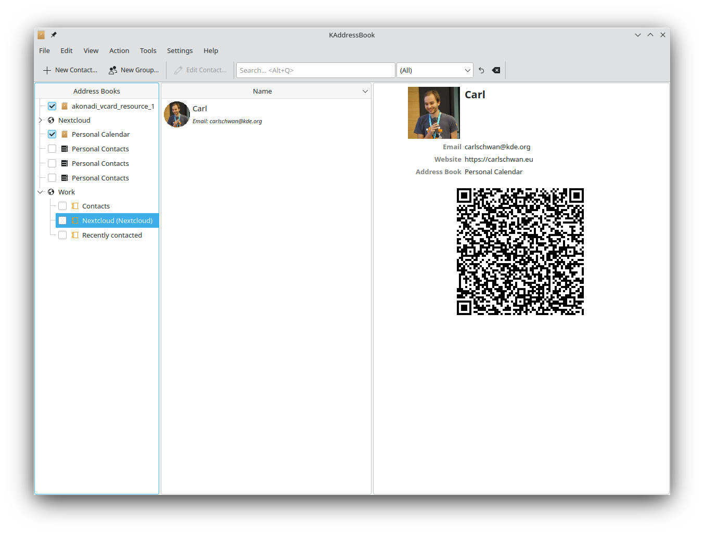

Sincronización con KDE Kontact
KOrganizer, Kalendar e KAddressBook poden sincronizar o seu calendario, contactos e tarefas cun servidor Nextcloud.
Isto pódese facer seguindo estes pasos dependendo de se utiliza KOrganizer ou Kalendar:
En KOrganizer:
Abra KOrganizer e na lista de calendarios (abaixo á esquerda) prema co botón dereito e escolla
Engadir calendario:

Na lista resultante de recursos, escolla
Recurso de traballo en grupo DAV:

En Kalendar:
Abra Kalendar e na barra de menú abra a configuración e, a seguir, seleccione
Orixes dos calendarios-Engadir calendario:

Na lista resultante de recursos, escolla
Recurso de traballo en grupo DAV:

En KOrganizer e en Kalendar:
Introduza o seu nome de usuario. Como contrasinal, debe xerar un contrasinal/testemuño de aplicación (Máis información):

Escolla
`Nextcloudcomo opción do servidor de software de traballo en grupo:

Introduza o URL do seu servidor de Nextcloud e, se é necesario, a ruta de instalación (calquera cousa que apareza após a primeira /, por exemplo
omeunextcloudenhttps://example.com/omeunextcloud). Após, prema en seguinte:

Agora pode probar a conexión, o que pode levar algún tempo para a conexión inicial. Se non funciona, pode volver atrás e tentar resolvelo con outros axustes:


Escolla un nome para este recurso, por exemplo
TraballoouPersoal. Como predeterminado, sincronízanse tanto CalDAV (Calendario) como CardDAV (Contactos):

Note
Pode estabelecer unha taxa de actualización manual para os seus recursos de calendario e contactos. De xeito predeterminado, este axuste estabelécese en 5 minutos e debería estar ben para a maioría dos casos. Cando crea unha nova cita, sincronízase con Nextcloud de inmediato. É posíbel que queira cambiar isto para aforrar enerxía ou no seu plan de datos móbiles, que pode actualizar cun clic dereito sobre o elemento da lista do calendario.
Após uns segundos ou minutos, dependendo da súa conexión a Internet, atopará os seus calendarios e contactos dentro das aplicacións KDE Kontact, KOrganizer e KAddressBook, así coma no trebello de calendario de Plasma:


